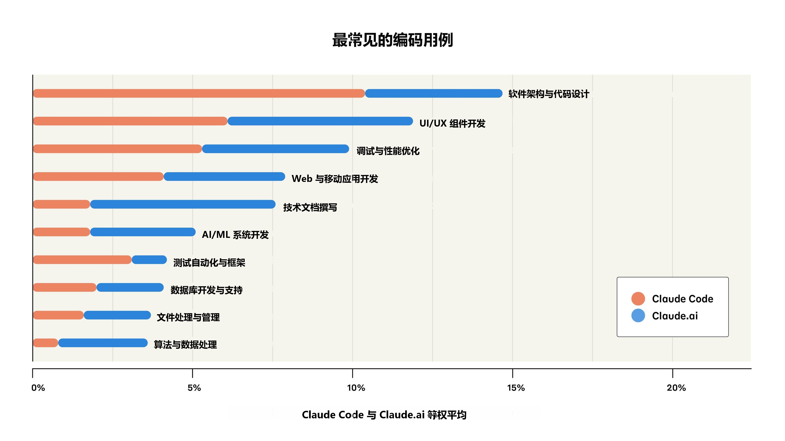
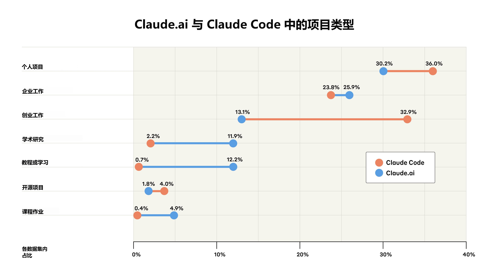
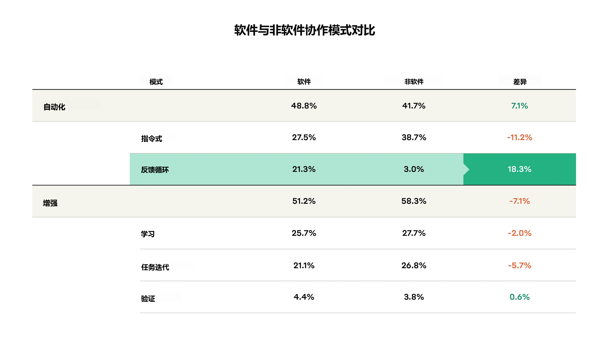

Anthropic经济指数：AI对软件开发的影响
📖 中文摘要
专业术语注解
经济指数：基于真实使用数据分析AI对经济影响的系列研究自动化与增强：AI直接替人完成任务与AI辅助人完成任务的区别智能体（agent）：能自主完成多步复杂任务的AI系统自然语言编程（vibe coding）：用自然语言描述意图，让AI负责实现细节隐私保护分析：在不泄露个人信息前提下分析海量对话的技术📄 中文全文
- 类别： 社会影响
- 来源： https://www.anthropic.com/research/impact-software-development
社会影响｜经济研究
2025 年 4 月 28 日
涉及计算机编程的工作是现代经济中的一个小行业，但也是一个有影响力的行业。过去几年，能够协助——并自动化——大量编码工作的 AI 系统的引入，使它们发生了巨大变化。
在我们之前的经济指数研究中，我们发现美国计算机相关职业的工人对 Claude 的使用极不成比例：也就是说，与计算机相关任务的 Claude 对话数量，远远超过根据相关工作岗位人数所能预测的数量。在教育场景中也是如此：涉及大量编码的计算机科学学位，表现出高度不成比例的 AI 使用。
为了更详细地理解这些变化，我们分析了 Claude.ai（大多数人使用 Claude 的「默认」方式）和 Claude Code（我们新的专业编码「智能体」，可以使用各种数字工具独立完成一系列复杂任务）上 50 万次与编码相关的互动。
我们发现三个关键模式：
1. 编码智能体被用于更多自动化。 Claude Code 上 79% 的对话被识别为「自动化」——AI 直接执行任务——而非「增强」，即 AI 与人类协作并增强人类能力（21%）。相比之下，Claude.ai 上只有 49% 的对话被归类为自动化。这可能意味着，随着 AI 智能体变得更加普遍，随着更多智能体 AI 产品被构建，我们应该预期更多任务自动化。
2. 程序员普遍用 AI 构建面向用户的应用。 JavaScript 和 HTML 等 Web 开发语言是我们数据集中最常用的编程语言，而用户界面和用户体验任务位居编码用途前列。这表明，以制作简单应用和用户界面为核心的工作，可能比纯粹专注于后端的工作更早面临 AI 系统的颠覆。
3. 初创公司是 Claude Code 的主要早期采用者，而企业则落后。 在一项初步分析中，我们估计 Claude Code 上 33% 的对话服务于创业相关工作，而只有 13% 被识别为企业相关应用。采用差距表明，敏捷使用尖端 AI 工具的组织与传统企业之间存在鸿沟。
我们如何分析 Claude Code 和 Claude.ai 上的对话
我们使用隐私保护分析工具分析了总共 50 万次 Claude 互动（在 Claude Code 和 Claude.ai¹ 之间分配），该工具将用户对话提炼为更高级、匿名的洞察。在这里，我们用它与识别对话的主题（例如「UI/UX 组件开发」），或者——正如我们下面将解释的——将对话归类为「增强」与「自动化」。
开发者如何与 Claude 互动？
在我们之前的经济指数报告中，我们把「自动化」（AI 直接执行任务）与「增强」（AI 与用户协作执行任务）区分开。在这里，我们发现 Claude Code 显示出显著更高的自动化率——79% 的对话涉及某种形式的自动化，而 Claude.ai 上为 49%。
我们还将自动化和增强细分为几个子类型（如我们在先前工作中所讨论的）。「反馈循环」模式——Claude 自主完成任务但借助人类验证（例如用户把任何错误发送回 Claude）——在 Claude Code 上（占互动的 35.8%）几乎是 Claude.ai（21.3%）的两倍。「指令式」对话——Claude 以最少用户互动完成任务——在 Claude Code 上也更高（43.8%，而 Claude.ai 为 27.5%）。所有增强模式——包括用户从 AI 模型获取知识的「学习」——在 Claude Code 上都显著低于 Claude.ai。
 子类型定义如下。指令式：以最少互动完全委托任务；反馈循环：由环境反馈引导的任务完成；任务迭代：协作完善过程；学习：知识获取与理解；验证：工作验证与改进。
这些结果说明了专业、编码聚焦的智能体（本例中为 Claude Code）与用户与大语言模型互动的更「标准」方式（即通过像 Claude.ai 这样的聊天机器人界面）之间的差异。随着更多智能体产品发布，我们可能会看到 AI 融入人们工作方式的不同。至少在编码方面，这可能涉及更多任务自动化。
这引发了关于随着 AI 使用越来越普遍，开发者在多大程度上仍会参与的问题。重要的是，我们的结果确实表明，即使在自动化内部，人类仍然经常参与：「反馈循环」互动仍然需要用户输入（即使该输入只是把错误信息粘贴回给 Claude）。但这种模式是否会持续到未来远不能确定——到那时，能力更强的智能体系统可能将需要越来越少的用户输入。
子类型定义如下。指令式：以最少互动完全委托任务；反馈循环：由环境反馈引导的任务完成；任务迭代：协作完善过程；学习：知识获取与理解；验证：工作验证与改进。
这些结果说明了专业、编码聚焦的智能体（本例中为 Claude Code）与用户与大语言模型互动的更「标准」方式（即通过像 Claude.ai 这样的聊天机器人界面）之间的差异。随着更多智能体产品发布，我们可能会看到 AI 融入人们工作方式的不同。至少在编码方面，这可能涉及更多任务自动化。
这引发了关于随着 AI 使用越来越普遍，开发者在多大程度上仍会参与的问题。重要的是，我们的结果确实表明，即使在自动化内部，人类仍然经常参与：「反馈循环」互动仍然需要用户输入（即使该输入只是把错误信息粘贴回给 Claude）。但这种模式是否会持续到未来远不能确定——到那时，能力更强的智能体系统可能将需要越来越少的用户输入。
开发者用 Claude 构建什么？
总体而言，我们发现开发者普遍使用 Claude 构建网站和移动应用的用户界面和交互元素。虽然没有单一语言占主导地位，但主要面向 Web 的开发语言 JavaScript 和 TypeScript 合计占所有查询的 31%，而 HTML² 和 CSS（其他面向用户的代码语言）合计又增加了 28%。

百分比代表两个平台上编码相关任务的总占比。由于 Claude Code 和 Claude.ai 权重相等，柱状图中对应每个平台的部分代表该平台使用量的一半。 后端开发语言（用于幕后逻辑、数据库和基础设施，以及 API 和 AI 开发）也有出现：值得注意的是，Python 占查询的 14%。然而，Python 有双重用途——既用于后端开发，也用于数据分析。与 SQL（另一种面向数据的语言，占查询的 6%）结合，这些语言可能包含了许多超出传统后端开发的数据科学和分析应用。 编码语言使用的百分比代表两个平台上的总占比。由于 Claude Code 和 Claude.ai 权重相等，柱状图中对应每个平台的部分代表该平台使用量的一半。
这些模式进一步延伸到涉及 Claude 的常见编码任务类型。前五项任务中有两项聚焦于面向用户的应用开发：「UI/UX 组件开发」和「Web 与移动应用开发」分别占对话的 12% 和 8%。这类任务越来越适合一种被称为「vibe coding」的现象——不同经验水平的开发者用自然语言描述他们想要的结果，让 AI 在实现细节上掌舵。
与更通用用途相关的对话，如「软件架构与代码设计」和「调试与性能优化」，在 Claude.ai 和 Claude Code 上也都有很高的占比。
推测而言，这些发现表明，如果不断增强的能力使「vibe coding」更多地进入主流工作流，那么以制作简单应用和用户界面为核心的工作可能更早面临 AI 系统的颠覆。随着 AI 越来越多地处理组件创建和样式设计任务，这些开发者可能会转向更高层次的设计和用户体验工作。
编码语言使用的百分比代表两个平台上的总占比。由于 Claude Code 和 Claude.ai 权重相等，柱状图中对应每个平台的部分代表该平台使用量的一半。
这些模式进一步延伸到涉及 Claude 的常见编码任务类型。前五项任务中有两项聚焦于面向用户的应用开发：「UI/UX 组件开发」和「Web 与移动应用开发」分别占对话的 12% 和 8%。这类任务越来越适合一种被称为「vibe coding」的现象——不同经验水平的开发者用自然语言描述他们想要的结果，让 AI 在实现细节上掌舵。
与更通用用途相关的对话，如「软件架构与代码设计」和「调试与性能优化」，在 Claude.ai 和 Claude Code 上也都有很高的占比。
推测而言，这些发现表明，如果不断增强的能力使「vibe coding」更多地进入主流工作流，那么以制作简单应用和用户界面为核心的工作可能更早面临 AI 系统的颠覆。随着 AI 越来越多地处理组件创建和样式设计任务，这些开发者可能会转向更高层次的设计和用户体验工作。
谁在用 Claude 编码？
我们还分析了哪些开发者群体可能在使用 Claude。我们使用分析系统来识别最能描述用户编码相关互动的项目类型（例如个人项目 vs. 为初创公司做的项目）。由于我们不知道 Claude 的回应被使用的真实世界背景，这些分析依赖于从不完整数据中做出的不确定推断。因此，我们把这些发现视为比上述发现更初步的结果。

点之间的距离表示每种项目类型在 Claude.ai（蓝色）和 Claude Code（橙色）上出现率的差距。 初创公司似乎是 Claude Code 的主要早期采用者，而企业采用则落后。创业工作占 Claude Code 对话的 32.9%（比其在 Claude.ai 上的使用量高出近 20%），而企业工作仅占 Claude Code 对话的 23.8%（略低于其在 Claude.ai 上 25.9% 的占比³）。 此外，涉及学生、学者、个人项目制作者和教程/学习用户的用途，合计占两个平台互动的一半。换言之，个人——不仅仅是企业——是编码辅助工具的重要采用者。 这些采用模式反映了以往的技术转变：初创公司利用新工具获得竞争优势，而成熟组织则更加谨慎，往往在公司范围采用前先建立详细的安全检查。AI 的通用性可能加速这一动态：如果 AI 智能体带来显著的生产力提升，早期与晚期采用者之间的差距可能转化为实质性的竞争优势。局限性
我们的分析基于真实的 AI 使用情况——开发者在工作流中实际如何使用 Claude。虽然这种方法使我们的发现具有实际相关性，但也带来了固有的局限性。这些包括： * 我们只分析了来自 Claude.ai 和 Claude Code 的数据。我们排除了可能显示不同模式（尤其是在专业环境中）的 Team、Enterprise 和 API 使用； * 对于 Claude Code 这样的智能体工具，自动化与增强之间的界限变得越来越模糊。例如，「反馈循环」模式与传统的自动化有本质区别，因为它仍然需要用户监督和输入。我们可能需要在自动化/增强框架中引入扩展，以涵盖新的智能体能力； * 我们对谁在用 Claude 编码的分类依赖于从有限上下文中做出的推断。在把对话归类为「创业」与「企业」工作，或「个人」与「学术」项目时，我们的分析工具基于不完整信息做出有根据的猜测。因此，有些分类可能不正确。此外，我们包含了一个「无法分类」选项，Claude 在 5% 的 Claude.ai 对话和 2% 的 Claude Code 对话中选择了该选项。我们在分析中排除了这一类别并重新归一化结果； * 我们的数据集可能捕捉到的是早期采用者。这些用户可能不代表更广泛的开发者群体，这种自我选择可能使使用模式偏向更有经验或技术上更爱冒险的用户； * 出于隐私考虑，我们只分析了特定保留窗口内的数据，可能遗漏软件开发中的周期性模式（如冲刺周期或发布计划）； * 相对于整体 AI 编码辅助的采用情况，Claude 使用的代表性尚不清楚。许多开发者除了 Claude 还使用多种 AI 工具，这意味着我们只呈现了其 AI 参与模式的部分图景； * 我们只研究了开发者委托给 AI 的内容——而不是他们最终如何在代码库中使用 AI 输出、所产生代码的质量，或这些互动是否有效提高了生产力或代码质量。
展望
AI 正在从根本上改变开发者的工作方式。我们的分析表明，这在专业智能体系统（如 Claude Code）被使用的场景尤其如此，在面向用户的应用开发工作中尤其突出，并且可能给初创公司带来相对于更成熟企业的特殊优势。 我们的发现引发了许多问题。随着 AI 能力进步，人类仍参与其中的「反馈循环」的普遍性会持续吗，还是我们会看到向更完全自动化的转变？随着 AI 系统能够构建更大规模的软件，开发者会转向主要管理和引导这些系统，而不是自己编写代码吗？哪些软件开发岗位会变化最大，哪些可能会完全消失？ AI 日益增长的编码能力也可能对 AI 开发本身特别重要。由于 AI 研究和开发中有很大一部分依赖软件，AI 辅助编码的进步有可能加速突破，形成一个正反馈循环，进一步加速 AI 进步。 从宏观来看，AI 系统极其新。但相对而言，编码是 AI 在经济中发展最成熟的用途之一。这使它值得关注。虽然我们不能假设从软件开发中汲取的教训会直接迁移到其他类型的职业，但软件开发可能是一个领先指标，给我们提供有用的信息，帮助我们了解其他职业在未来的 AI 模型能力不断增强的推广过程中可能如何变化。
与我们一起工作
如果你有兴趣在 Anthropic 研究 AI 对劳动力市场的影响，我们鼓励你申请我们的经济学家和数据科学家（政策）岗位。
附录
作为补充分析，我们还将软件相关自动化与增强模式的结果与不涉及软件的互动模式进行了比较。我们完全在 Claude.ai 上进行这项分析，因为 Claude Code 专门针对软件应用。

Claude.ai 中按软件与非软件用例划分的自动化和增强细分。关于每种模式的描述，见上文第一幅图的说明。 与不涉及软件的用例相比，软件开发更具自动化特征。反馈循环的显著增加（+18.3%）驱动了这一现象，并且值得注意的是，它抵消了指令式行为的明显_减少_（-11.2%）。换言之，与编码任务相比，AI 辅助编码目前需要大量的人类审查和迭代，即使 Claude 承担了大部分工作。脚注
1. Claude.ai 对话特指来自 Claude.ai Free 和 Pro 的对话。本样本只包括由第一方 API 驱动的 Claude Code 会话（Claude Code 可以由 Anthropic 第一方 API 或第三方云提供商 API 驱动）。我们在 Claude.ai 和 Claude Code 上分析的所有对话均来自 2025 年 4 月 6 日至 13 日。初始样本在 Claude.ai 和 Claude Code 之间平均分配；对于 Claude.ai，我们应用了基于 Claude 的过滤器来选择与编码相关的对话。为考虑过滤器的影响，我们在适用情况下对分析进行了重新归一化，使 Claude Code 和 Claude.ai 互动权重相等。 2. Claude.ai 的 HTML 数字可能略有膨胀，因为 Artifacts 利用了 HTML。虽然我们过滤掉了与编码无关的 Artifacts，但我们没有明确从分析中过滤掉包含编码相关内容的 Artifacts，因为大量编码使用发生在 Artifacts 中。 3. Claude.ai 使用不包括 Claude For Work（Team 和 Enterprise 套餐）的使用，这意味着 Claude.ai 的企业数字很可能被低估，因为 Claude.ai 上大量的企业使用发生在 Claude For Work 产品中。
相关内容
进一步了解 Claude 的数学能力
一个未发布的研究版 Claude 在与黎曼猜想相关的问题上取得了进展。它改进了黎曼 zeta 函数满足该猜想的零点比例的长期下界，将其从 41.6% 提高到 67.2%。 阅读更多
用 Claude 发现密码学弱点
密码算法。第一次攻击显著削弱了 HAWK——一种为未来量子计算机能够破解现有标准的世界而构建的数字签名方案。第二次攻击确定了一种攻击轮数缩减 AES（使用最广泛的对称密码）的新方法。 阅读更多
Project Pilot：AI 能控制无人机吗？
我们与 Andon Labs 合作，开发了一系列评估 AI 模型使用飞行无人机能力的新测试，最终形成了一个新基准：Drone-Bench。 阅读更多
▸ 英文原文（点击展开）
Anthropic Economic Index: AI’s impact on software development
- Category: Societal Impacts
- Source: https://www.anthropic.com/research/impact-software-development
Societal ImpactsEconomic Research
Anthropic Economic Index: AI’s impact on software development
Apr 28, 2025
Jobs that involve computer programming are a small sector of the modern economy, but an influential one. The past couple of years have seen them changed dramatically by the introduction of AI systems that can assist with—and automate—significant amounts of coding work.
In our previous Economic Index research, we found very disproportionate use of Claude by US workers in computer-related occupations: that is, there were many more conversations with Claude about computer-related tasks than one would predict from the number of people working in relevant jobs. It’s the same in the educational context: Computer Science degrees—which involve large amounts of coding—show highly disproportionate AI use.
To understand these changes in more detail, we conducted an analysis of 500,000 coding-related interactions across Claude.ai (the “default” way that most people interact with Claude) and Claude Code (our new specialist coding “agent” that can independently accomplish chains of complex tasks using a variety of digital tools).
We found three key patterns:
1. The coding agent is used for more automation. 79% of conversations on Claude Code were identified as “automation”—where AI directly performs tasks—rather than “augmentation,” where AI collaborates with and enhances human capabilities (21%). In contrast, only 49% of Claude.ai conversations were classified as automation. This might imply that as AI agents become more commonplace, and as more agentic AI products are built, we should expect more automation of tasks.
2. Coders commonly use AI to build user-facing apps. Web-development languages such as JavaScript and HTML were the most common programming languages used in our dataset, and user interface and user experience tasks were among the top coding uses. This suggests that jobs that center on making simple applications and user interfaces may face disruption from AI systems sooner than those focused purely on backend work.
3. Startups are the main early adopters of Claude Code, while enterprises lag behind. In a preliminary analysis, we estimated that 33% of conversations on Claude Code served startup-related work, compared to only 13% identified as enterprise-relevant applications. The adoption gap suggests a divide between nimbler organizations using cutting-edge AI tools, and traditional enterprises.
How we analyzed conversations on Claude Code and Claude.ai
We analyzed the 500,000 total Claude interactions (split between Claude Code and Claude.ai1) using our privacy-preserving analysis tool, which distills user conversations into higher-level, anonymized insights. Here, we used it to identify the topic of the conversation (e.g. “UI/UX component development”), or—as we’ll explain below—to categorize a conversation as focusing on “augmentation” versus “automation”.
How do developers interact with Claude?
In our previous Economic Index reports, we separated out “automation,” where AI directly performs tasks, from “augmentation,” where AI collaborates with a user to perform a task. Here, we found that Claude Code showed dramatically higher automation rates—79% of conversations involved some form of automation, compared to 49% on Claude.ai.
We also split automation and augmentation into several subtypes (as discussed in our previous work). “Feedback Loop” patterns, where Claude completes tasks autonomously but with help of human validation (for example, where the user sends any errors back to Claude), were nearly twice as common on Claude Code (35.8% of interactions) as Claude.ai (21.3%). “Directive” conversations, where Claude completed a task with minimal user interaction, were also higher on Claude Code (43.8%, versus 27.5% on Claude.ai). All the patterns of augmentation—including “Learning,” where the user acquires knowledge from the AI model—were substantially lower on Claude Code than on Claude.ai.
Subtypes are defined as follows. Directive: Complete task delegation with minimal interaction; Feedback Loop: Task completion guided by environmental feedback; Task Iteration: Collaborative refinement process; Learning: Knowledge acquisition and understanding; Validation: Work verification and improvement.
These results illustrate the differences between specialist, coding-focused agents (in this case, Claude Code) and the more “standard” way that users interact with large language models (i.e., through a chatbot interface like Claude.ai). As more agentic products are released, we might see differences in the way AI is integrated into people’s jobs. At least in the case of coding, this might involve more automation of tasks.
This raises questions about the extent to which developers will still be involved as AI use becomes more common. Importantly, our results do show that even within automation, humans are still very often involved: “Feedback Loop” interactions still require user input (even if that input is simply pasting error messages back to Claude). But it’s by no means certain that this pattern will persist into the future, when more capable agentic systems will likely require progressively less user input.
What are developers building with Claude?
Overall, we found that developers commonly use Claude for building user interfaces and interactive elements for websites and mobile applications. Although no single language dominated, the primarily web-focused development languages of JavaScript and TypeScript together accounted for 31% of all queries, and HTML2 and CSS (other languages for user-facing code) together added another 28%.
Percentages represent total percentages of coding-related tasks across both platforms. Because Claude Code and Claude.ai are equally weighted, the portions of the bars that correspond to each of the platforms represent half of that platform's usage.
Back-end development languages (used for behind-the-scenes logic, databases, and infrastructure, as well as API and AI development) were also represented: notably, Python was at 14% of queries. However, Python serves dual purposes—both for back-end development and data analysis. Combined with SQL (another data-focused language, making up 6% of queries), these languages likely included many data science and analytics applications beyond traditional back-end development.
Percentages of coding language uses represent total percentages across both platforms. Because Claude Code and Claude.ai are equally weighted, the portions of the bars that correspond to each of the platforms represent half of that platform's usage.
These patterns further extend to the types of common coding tasks involving Claude. Two of the top five tasks were focused on user-facing app development: “UI/UX Component Development” and “Web & Mobile App Development” each accounted for 12% and 8% of conversations, respectively. Such tasks increasingly lend themselves to a phenomenon known as “vibe coding”—where developers of varying levels of experience describe their desired outcomes in natural language and let AI take the wheel on implementation details.
Conversations that related to more generic uses, such as “Software Architecture & Code Design” and “Debug and Performance Optimization” were also highly represented in both Claude.ai and Claude Code.
Speculatively, these findings suggest that jobs that center on making simple applications and user interfaces might face earlier disruption from AI systems if increasing capabilities cause “vibe coding” to shift more into mainstream workflows. As AI increasingly handles component creation and styling tasks, these developers might shift toward higher-level design and user experience work.
Who is using Claude for coding?
We also analyzed which groups of developers might be using Claude. We used our analysis system to identify the type of project (e.g. a personal project vs. a project done for a startup) that best described users’ coding-related interactions. Because we don’t know the real-world context in which Claude’s responses were being used, these analyses rely on uncertain inferences from incomplete data. We therefore treat these findings as more preliminary than the ones described above.
The distance between the dots indicates the gap in the prevalence of each type of project on Claude.ai (blue) and Claude Code (orange).
Startups appear to be the primary early adopters of Claude Code, and enterprise adoption lags behind. Startup work accounted for 32.9% of Claude Code conversations (nearly 20% higher than their Claude.ai usage), whereas enterprise work represented only 23.8% of Claude Code conversations (slightly below their 25.9% share on Claude.ai3).
In addition, uses involving students, academics, personal project builders, and tutorial/learning users collectively represent half of the interactions across both platforms. In other words, individuals—not just businesses—are significant adopters of coding assistance tools.
These adoption patterns mirror past technology shifts, where startups use new tools for competitive advantage while established organizations move more cautiously and often have detailed security checks in place before adopting new tools company-wide. AI's general-purpose nature could accelerate this dynamic: If AI agents provide significant productivity gains, the gap between early and late adopters could translate into substantial competitive advantages.
Limitations
Our analysis is grounded in real-world AI use—how developers are actually using Claude in their workflows. Although this approach gives our findings practical relevance, it also brings inherent limitations. These include: * We analyzed data from Claude.ai and Claude Code only. We excluded Team, Enterprise, and API usage that might show different patterns, particularly in professional settings; * The boundary between automation and augmentation becomes increasingly blurred with agentic tools like Claude Code. For example, the “Feedback Loop” pattern differs qualitatively from traditional automation, because it still requires user supervision and input. We will likely need to extend the automation/augmentation framework to account for new agentic capabilities; * Our categorization of who is using Claude for coding relied on inference from limited context. When categorizing conversations as “startup” versus “enterprise” work, or “personal” versus “academic” projects, our analysis tool made educated guesses based on incomplete information. Some classifications might therefore be incorrect. Additionally, we included an option for ‘Could Not Classify’, which Claude opted for in 5% of Claude.ai conversations and 2% of Claude Code conversations. We excluded this category from analysis and renormalized the results; * Our dataset likely captures early adopters. These users might not represent the broader developer population, and this self-selection could skew usage patterns towards more experienced or technically adventurous users; * Due to privacy considerations, we only analyzed data within a specific retention window, potentially missing cyclical patterns in software development (such as sprint cycles or release schedules); * The representativeness of Claude usage is unclear, relative to overall AI coding assistance adoption. Many developers use multiple AI tools beyond Claude, meaning we present only a partial view of their AI engagement patterns; * We only studied what developers delegate to AI—not how they ultimately use AI outputs in their codebase, the quality of the resulting code, or whether these interactions effectively improved productivity or code quality.
Looking ahead
AI is fundamentally changing the ways developers work. Our analysis implies that this is particularly true where specialist agentic systems like Claude Code are used, is particularly strong for user-facing app development work, and might be giving particular advantages to startups as opposed to more established business enterprises. Our findings raise many questions. Will the prevalence of “feedback loops,” where humans are still involved in the process, persist as AI capabilities advance, or will we see a shift toward more complete automation? As AI systems become capable of building larger-scale pieces of software, will developers shift to mostly managing and guiding these systems, rather than writing code themselves? Which software development roles will change the most, and which might disappear entirely? The increasing coding skills of AI might also be especially consequential for AI development itself. Since so much of AI research and development relies on software, it’s possible that advancements in AI-assisted coding help to speed up breakthroughs, creating a positively-reinforcing cycle that accelerates AI progress even further. In the grand scheme of things, AI systems are extremely new. But in a relative sense, coding is among the most developed uses of AI in the economy. That makes it worth watching. Although we can’t assume that the lessons we draw from software development will directly carry over to other types of occupation, software development might be a leading indicator that gives us useful information about how other occupations might change with the rollout of increasingly capable AI models in the future.
Work With Us
If you’re interested in working at Anthropic to research the effects of AI on the labor market, we encourage you to apply for our Economist and Data Scientist (Policy) roles.
Appendix
As a supplementary analysis, we also compared our results for software-related automation and augmentation patterns to patterns in interactions that did not involve software. We conducted this analysis exclusively in Claude.ai, because Claude Code specializes in software applications.
Breakdown of automation and augmentation by software versus non-software use cases in Claude.ai. For a description of each pattern, see the caption to the first figure above.
Compared to use cases that don’t involve software, software development is more automative. A significant increase in Feedback Loops (+18.3%) drives this and, notably, offsets a clear decrease in Directive behaviors (-11.2%). In other words, AI-assisted coding currently requires a lot of human reviewing and iteration relative to non-coding tasks, even when Claude does the bulk of the work.
Footnotes
1. Claude.ai conversations were specifically those from Claude.ai Free and Pro. This sample only includes Claude Code sessions powered by the first-party API (Claude Code can be powered by Anthropic first-party APIs or third party cloud provider APIs). All conversations used in our analysis across Claude.ai and Claude Code were from April 6-13, 2025. The initial sample was split evenly across Claude.ai and Claude Code and for Claude.ai, we applied a Claude-based filter to select conversations related to coding. To account for the filter, we renormalized analyses to equally weight Claude Code and Claude.ai interactions, where applicable. 2. The HTML numbers for Claude.ai are likely inflated slightly because Artifacts leverage HTML. While we filter out Artifacts that are unrelated to coding, we don’t explicitly filter out Artifacts that contain coding-related content from the analysis because significant coding usage happens within Artifacts. 3. Claude.ai usage does not include Claude For Work (Team and Enterprise plans) usage, which implies that enterprise numbers for Claude.ai specifically are likely undercounted because a significant amount of enterprise usage on Claude.ai occurs within the Claude For Work product.
Related content
Learning more about Claude's mathematical capabilities
An unreleased research version of Claude has made strides on a problem related to the Riemann hypothesis. It improved a longstanding lower bound for the fraction of zeros of the Riemann zeta function that satisfy the hypothesis, increasing it from 41.6% to 67.2%. Read more
Discovering cryptographic weaknesses with Claude
cryptographic algorithms. The first attack significantly weakens HAWK, a digital signature scheme that was built for a future world where quantum computers are able to break existing standards. The second identifies a new way to attack round-reduced AES, the most widely used symmetric cipher. Read more
Project Pilot: Can AI control a drone?
Working with Andon Labs, we’ve developed a new series of evaluations that assess AI models’ ability to use a flying drone, culminating in a new benchmark: Drone-Bench. Read more